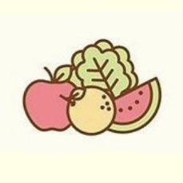

Physical health is an essential part of self-care. It can boost your mood and clear your head. Physical activity is healthy for our bodies and minds as the body and the mind have a strong connection. It would be difficult to be in a good mood when you are not feeling good about your body.
How can Physical Care be Practiced?
Good Personal Hygiene
Take a bath and change your underwear daily. Wash your hands after going to the restroom or before eating. Keep your hair neat always. Brush your teeth twice a day for two minutes and visit your dentist regularly. Cut your nails weekly and keep them short and clean.
Eat a healthy meal

Eat a nutritious and well-balanced diet. Enjoy home-cooked meals. You should include more fruits and vegetables in your daily intake. Avoid junk foods, fried foods, and sweets. Eat your breakfast daily and drink your vitamins.
Drink water
Keep yourself hydrated. Drink 6-8 glasses of water per day. Bring a bottle of water everywhere you go and make it a habit to sip regularly to keep your body healthy and give you lots of energy every day.
Get 8-10 hours of sleep
Get at least 8-10 hours of sleep every night. Having enough sleep helps you concentrate. Develop an excellent nighttime sleeping routine for yourself. Turn off your phones and all electronic gadgets at least 30 minutes before your bedtime.
Exercise at least thrice a week
Exercise at least thrice a week to keep your body healthy and reduce your stress levels. Avoid sitting down all day watching Netflix, movie marathons, or K-dramas or playing video games. You can include other fitness activities, such as yoga, biking, running, or playing badminton. There are a lot of good workout videos online. Check out the video below:
References:
Calkins, W. (2020, October 20). Physical Self-Care: Self-Care Series (Part 1). Oregon Counseling. https://oregoncounseling.com/article/self-care-series-part-1-physical-self-care/
Cloud, K. (n.d.). Care Bears Halloween Costume [Illustration]. Pinterest. https://www.pinterest.ph/pin/408631366187990371/
Francois, M. L. (2016, October 23). 8 Quick Self-Care Strategies for College Students. Mindsoother Therapy Center. https://www.mindsoother.com/blog/8-quick-self-care-strategies-for-college-students
Glowiak, M. (2020, April 14). What is Self-Care and Why is it Important For You? Southern New Hampshire University. https://www.snhu.edu/about-us/newsroom/health/what-is-self-care
Self-Care. (n.d.). University of Toledo. https://www.utoledo.edu/studentaffairs/counseling/selfhelp/copingskills/selfcare.html
Keep It Tight Sisters. (n.d.). Self-care Is A Priority. [Illustration]. Pinterest. https://clipart.world/exercise-clipart/exercise-clipart-picture/